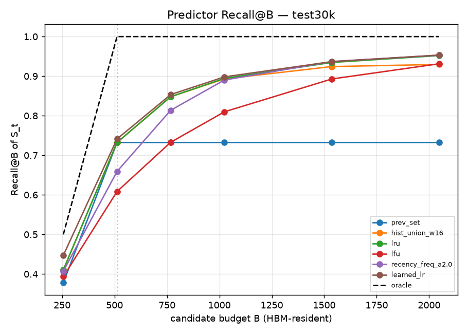
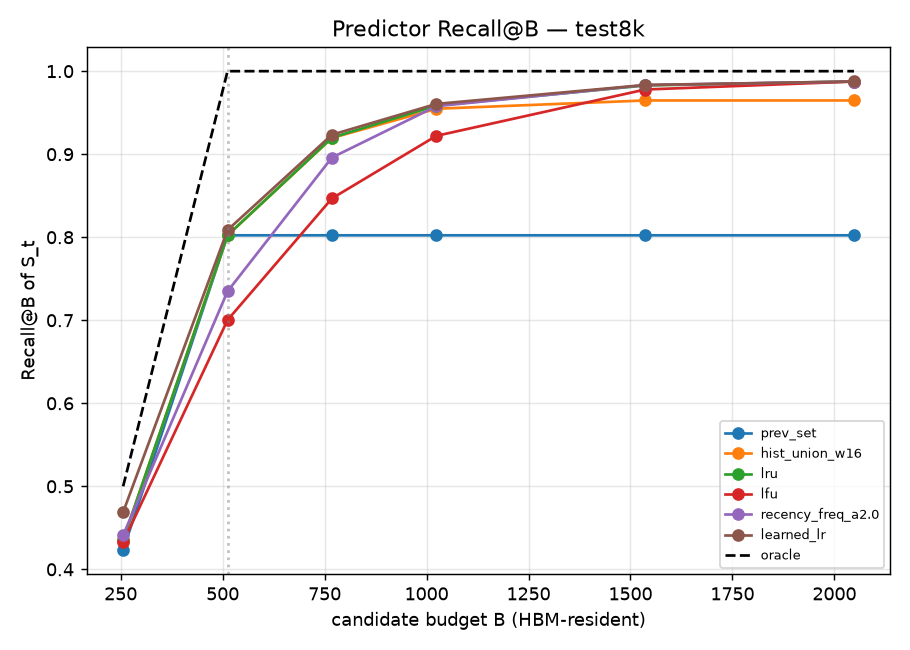
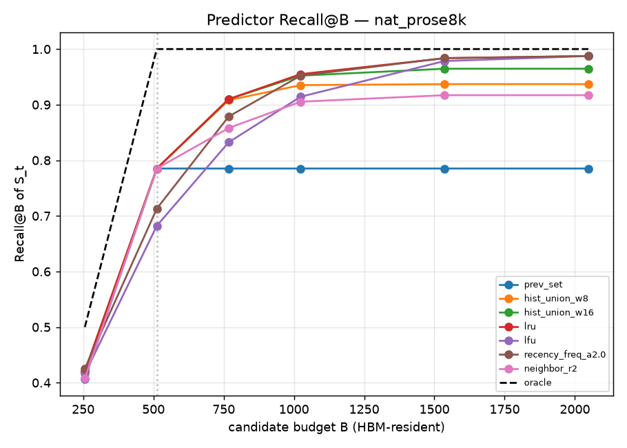

DeepSeek-V4 Sparse Attention — Part II
Given that the selected KV set is predictable (Part I), how well can we actually predict it? We compare classic cache policies and a small learned model, scored by how much of the next selection a fixed memory budget would contain.
§Overview
A memory system that keeps a small "hot set" of KV entries in fast memory needs a predictor: which entries will the next token select? Part I showed the answer is mostly "the recently-selected ones." Here we turn that into concrete policies and measure them.
§1The prediction problem
Before the model reveals which 512 entries it will select for the next token, propose a candidate set of size B; we then check how much of the real selection you got right.
The size B is the memory budget — how many entries you're willing to keep "hot" in fast memory (HBM). A predictor uses only what it has seen so far (past selections) — no peeking at the future. We score it with Recall@B:
§2The predictors, explained simply
All are online policies: they watch the stream of selections and rank candidate entries. We take the top-B of that ranking as the prediction.
§3How we score them (fairly)
- Data: the recorded selection sequences from Part I (correct vLLM model, contexts 4K/8K/30K, ~191 decode steps each, synthetic + natural).
- Budgets B: 256, 512, 768, 1024, 1536, 2048 (top-k is 512, so B=512 is "1×").
- No leakage: the heuristic policies use only each sequence's own past; the learned model is trained on some requests and evaluated on held-out ones.
- Oracle is reported as the ceiling: Recall@512 = 1.0 by construction.
§4Results
At the hardest setting (30K context, ~7,700 candidates, 15× sparse), here is Recall@B for the main policies:
| predictor | B=256 | B=512 | B=768 | B=1024 | B=1536 | B=2048 |
|---|---|---|---|---|---|---|
| previous-set | 0.378 | 0.733 | 0.733 | 0.733 | 0.733 | 0.733 |
| history-union W=16 | 0.410 | 0.733 | 0.848 | 0.893 | 0.925 | 0.930 |
| LRU (recency) | 0.410 | 0.733 | 0.848 | 0.895 | 0.935 | 0.951 |
| LFU (frequency) | 0.392 | 0.606 | 0.731 | 0.809 | 0.891 | 0.930 |
| LFU-aging | 0.436 | 0.702 | 0.826 | 0.885 | 0.934 | 0.952 |
| cross-layer | 0.197 | 0.364 | 0.364 | 0.364 | 0.364 | 0.364 |
| oracle (ceiling) | 0.500 | 1.000 | 1.000 | 1.000 | 1.000 | 1.000 |

What the numbers say
- LRU is the best simple policy at a budget. Keeping the 1,024 most-recent entries (just 13% of ~7,700) covers 89.5% of the next selection; 2,048 → 95%.
- Recency ≫ frequency. Pure LFU is the weakest history method at B=512 (0.61 vs LRU 0.73) — popularity goes stale.
- previous-set / history-union plateau once B exceeds their fixed size; a ranked policy (LRU) keeps improving as you grant more budget.
- Cross-layer signal is real but weak (0.36 @512) — a useful auxiliary feature, not a primary predictor.
Shorter contexts are easier: at 8K, LRU reaches 0.96 @1024 and 0.99 @2048; at 4K, 0.99 @1024.


§5Our proposal: a small learned predictor
Can a model that combines these signals do better than any single heuristic? We trained a lightweight logistic-regression ranker on 7 per-candidate features, on a train split of requests, and evaluated it on held-out requests.
Features (per candidate entry, from history only)
in_prev, recency, freq, freq_w8, age, streak, decay. The learned weights are interpretable and echo the whole study:
| feature | weight | reading |
|---|---|---|
| recency | +3.80 | how recently selected — by far the strongest signal |
| streak | +1.65 | currently on a run of selections |
| decay | +1.58 | recency-weighted frequency |
| freq | +1.09 | raw frequency — weakly positive |
| freq_w8 | +0.08 | windowed frequency — negligible |
| age | −0.06 | older first-seen — slightly negative |
Learned vs best heuristic (held-out)
| context | B | best heuristic | learned |
|---|---|---|---|
| 30K | 256 | 0.435 (lfu-aging) | 0.447 |
| 30K | 512 | 0.732 (lru) | 0.741 |
| 30K | 1024 | 0.894 (lru) | 0.898 |
| 8K | 512 | 0.802 (lru) | 0.809 |
| 4K | 512 | 0.861 (lru) | 0.865 |
recency weight explains why: with index-only features, a learned model is essentially "a well-tuned recency policy."§6Design implications
- Predictor of choice: recency-ranked residency (LRU) for the bulk; switch to LFU-aging when the per-layer budget drops below ~1× top-k.
- Budget → coverage knob: at 30K, recall rises 0.73 → 0.90 → 0.95 as B goes 512 → 1024 → 2048 — a clean dial to hit a target hit-rate.
- Per-layer budgets: Part I showed layers differ in stability; pair stable layers with smaller budgets, churny layers with more headroom.
§7Future directions
- Capture the indexer's scores, not just which entries it picked. The model computes a relevance score for every candidate before taking the top-512; those scores would unlock score-based predictors (score-decay, rank-velocity, boundary-aware) and likely give a learned model real headroom beyond LRU.
- Build the HBM–LPDDR simulator to convert Recall@B (an upper bound) into TimelyRecall — accounting for prefetch deadlines, link bandwidth, and eviction, i.e. whether the right entry actually arrives in time.
- Longer context (128K–256K) on multi-GPU (H200) to see how prediction holds at extreme sparsity.
- More sparse-attention models — DeepSeek-V3.2, GLM-DSA, MiniMax-MSA, NSA/SSA/MoBA — and cross-model transfer (train a predictor on one model, test on another).
- Stronger learned models (gradient-boosted trees, GRU/tiny-transformer over recent selection events), especially once scores are available as features.